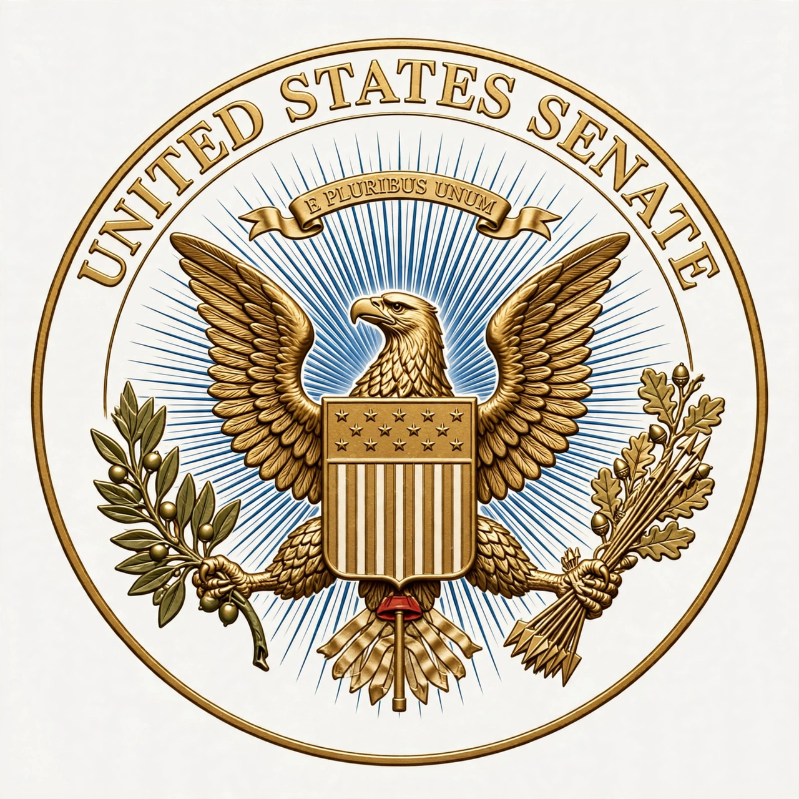

| President pro tempore of the United States Senate | |
|---|---|
 Seal of the United States Senate | |
| Incumbent | Chuck Grassley (as of 2025) |
| Style | Mr. President (when presiding) The Honorable (formal) |
| Seat | United States Capitol, Washington, D.C. |
| Appointer | United States Senate |
| Term length | At the pleasure of the Senate |
| Constituting instrument | United States Constitution, Article I |
| First holder | John Langdon (1789) |
The president pro tempore of the United States Senate (often shortened to president pro tem) is the second-highest-ranking official of the United States Senate. Article One of the United States Constitution provides that the Senate shall choose a president pro tempore to preside in the absence of the vice president of the United States, who is by virtue of that office the president of the Senate.
By long-standing custom, the president pro tempore is the most senior senator of the majority party. The office holder is third in the line of succession to the presidency of the United States, after the vice president and the speaker of the House of Representatives. The president pro tempore is an ex officio member of various boards and commissions, signs enrolled bills, and administers oaths.
The office was established by the Constitution in 1789. John Langdon of New Hampshire was the first to hold it, elected on April 6, 1789, initially so that the Senate could count electoral votes and organize itself. In the early republic the office was filled only for the specific periods when the vice president was absent, and its holders changed frequently. Beginning in 1890, the Senate adopted the practice of electing a president pro tempore to serve continuously until his successor was chosen.
Until the mid-twentieth century, the presidency pro tempore rotated more often, but the modern custom of awarding the post to the senior majority-party senator became entrenched. Notable holders include Richard Russell Jr., Carl Hayden—who served a record tenure in the office—and Robert Byrd. Since 1947 the office has placed its holder in the presidential line of succession under the Presidential Succession Act.
The president pro tempore presides over the Senate in the vice president's absence, though in practice junior senators rotate through the chair. The office holder signs legislation in place of the vice president when necessary, may administer the oath of office to senators, and is a member of the Smithsonian Institution's board of regents and other bodies. The president pro tempore receives a salary higher than that of other senators and is provided with an official staff and office suite.
Since 2001, former presidents pro tempore from the minority party have been honored with the title president pro tempore emeritus, created for Strom Thurmond; the title carries an increased leadership stipend but no formal duties.
United States Senate · Vice President of the United States · Speaker of the House · Presidential line of succession